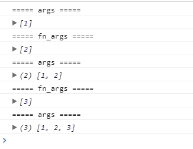
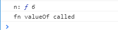

<!DOCTYPE html>
<html lang="en">
<head><meta name="generator" content="Hexo 3.8.0">
  <meta charset="utf-8">
  
  
  
    <meta name="description" content="forever young">
  
  <meta name="viewport" content="width=device-width, initial-scale=1, maximum-scale=1">
  <title>
    函数柯里化 |
    
    xqyoung&#39;s blog</title>
  
    <link rel="shortcut icon" href="/favicon.ico">
  
  <link rel="stylesheet" href="/css/style.css">
  
    <link rel="stylesheet" href="/fancybox/jquery.fancybox.min.css">
  
  <script src="/js/pace.min.js"></script>
</head>
</html>
<body>
<main class="content">
  <section class="outer">
  <article id="post-currying" class="article article-type-post" itemscope="" itemprop="blogPost" data-scroll-reveal="">

    <div class="article-inner">
        
            <header class="article-header">
                
  
    <h1 class="article-title" itemprop="name">
      函数柯里化
    </h1>
  
  


            </header>
            

                
                    <div class="article-meta">
                        <a href="/2018/11/20/currying/" class="article-date">
  <time datetime="2018-11-20T14:53:08.000Z" itemprop="datePublished">2018-11-20</time>
</a>
                            
  <div class="article-category">
    <a class="article-category-link" href="/categories/函数式编程/">函数式编程</a>
  </div>

                    </div>
                    

                        
                            
    <div class="tocbot"></div>


                                

                                    <div class="article-entry" itemprop="articleBody">
                                        


                                            

                                                
                                                                    <h2 id="链式调用"><a href="#链式调用" class="headerlink" title="链式调用"></a>链式调用</h2><p>实现 <code>add(2)(3)(4)...(n)</code> 。</p>
<h3 id="代码"><a href="#代码" class="headerlink" title="代码"></a>代码</h3><figure class="highlight javascript"><table><tr><td class="gutter"><pre><span class="line">1</span><br><span class="line">2</span><br><span class="line">3</span><br><span class="line">4</span><br><span class="line">5</span><br><span class="line">6</span><br><span class="line">7</span><br><span class="line">8</span><br><span class="line">9</span><br><span class="line">10</span><br><span class="line">11</span><br><span class="line">12</span><br><span class="line">13</span><br><span class="line">14</span><br><span class="line">15</span><br><span class="line">16</span><br><span class="line">17</span><br><span class="line">18</span><br></pre></td><td class="code"><pre><span class="line"><span class="function"><span class="keyword">function</span> <span class="title">add</span>(<span class="params">n</span>) </span>&#123;</span><br><span class="line">    <span class="keyword">var</span> args = [].slice.call(<span class="built_in">arguments</span>); <span class="comment">// 闭包存储args</span></span><br><span class="line">    <span class="built_in">console</span>.log(<span class="string">'===== args ====='</span>);</span><br><span class="line">    <span class="built_in">console</span>.log(args);</span><br><span class="line">    </span><br><span class="line">    <span class="keyword">var</span> fn = <span class="function"><span class="keyword">function</span>(<span class="params"></span>) </span>&#123;</span><br><span class="line">        <span class="keyword">var</span> fn_args = [].slice.call(<span class="built_in">arguments</span>); <span class="comment">// 合并参数</span></span><br><span class="line">        <span class="built_in">console</span>.log(<span class="string">'===== fn_args ====='</span>);</span><br><span class="line">        <span class="built_in">console</span>.log(fn_args);</span><br><span class="line">        <span class="keyword">return</span> add.apply(<span class="literal">null</span>, args.concat(fn_args));</span><br><span class="line">    &#125;</span><br><span class="line"></span><br><span class="line">    fn.valueOf = <span class="function"><span class="keyword">function</span>(<span class="params"></span>) </span>&#123;</span><br><span class="line">        <span class="built_in">console</span>.log(<span class="string">'fn valueOf called'</span>);</span><br><span class="line">        <span class="keyword">return</span> args.reduce(<span class="function">(<span class="params">a, b</span>) =&gt;</span>  a + b );</span><br><span class="line">    &#125;</span><br><span class="line">    <span class="keyword">return</span> fn;</span><br><span class="line">&#125;</span><br></pre></td></tr></table></figure>
<h3 id="调用"><a href="#调用" class="headerlink" title="调用"></a>调用</h3><figure class="highlight javascript"><table><tr><td class="gutter"><pre><span class="line">1</span><br></pre></td><td class="code"><pre><span class="line"><span class="keyword">var</span> n = add(<span class="number">1</span>)(<span class="number">2</span>)(<span class="number">3</span>);</span><br></pre></td></tr></table></figure>
<p></p>
<p>试打印 <code>n</code> 的值，注意浏览器中 <code>console.log</code> 会尝试将n转换成字符串输出。此时有隐式转换发生。注意这个时候 <code>n</code> 是一个 <code>Function</code> 类型。</p>
<p></p>
<blockquote>
<p><code>valueOf</code> 和 <code>toString</code> 方法：在特定的情况下，这俩个方法都会自动调用，而且在用户定义了新的 <code>valueOf</code> 和 <code>toString</code> 的时候，会优先执行新的方法。</p>
</blockquote>

                                                                        
                                    </div>
                                    <footer class="article-footer">
                                        <a data-url="http://www.xqyoung.com/2018/11/20/currying/" data-id="ckbs697pm000frhjcjfkvonjp" class="article-share-link">
                                            Share
                                        </a>
                                        
  <ul class="article-tag-list"><li class="article-tag-list-item"><a class="article-tag-list-link" href="/tags/js/">js</a></li><li class="article-tag-list-item"><a class="article-tag-list-link" href="/tags/面试题/">面试题</a></li></ul>

                                    </footer>

    </div>

    
        
  <nav class="article-nav">
    
      <a href="/2018/11/20/debounce/" class="article-nav-link">
        <strong class="article-nav-caption">Newer</strong>
        <div class="article-nav-title">
          
            debounce 防抖
          
        </div>
      </a>
    
    
      <a href="/2018/11/20/async-await-and-promise/" class="article-nav-link">
        <strong class="article-nav-caption">Older</strong>
        <div class="article-nav-title">async/await 异步队列 vs Promise 异步队列</div>
      </a>
    
  </nav>


            

                
                    
                        
                            

</article>
</section>
  <footer class="footer">
  <div class="outer">
    <div class="float-right">
      <ul class="list-inline">
  
    <li><i class="fe fe-smile-alt"></i> <span id="busuanzi_value_site_uv"></span></li>
  
    <li><i class="fe fe-bookmark"></i> <span id="busuanzi_value_page_pv"></span></li>
  
</ul>
    </div>
    <ul class="list-inline">
      <li>&copy; 2020 xqyoung&#39;s blog</li>
      <li>Powered by <a href="http://hexo.io/" target="_blank">Hexo</a></li>
      <li>Theme  <a href="https://github.com/zhwangart/hexo-theme-ocean">Ocean</a></li>
    </ul>
  </div>
</footer>

</main>
<aside class="sidebar">
  <button class="navbar-toggle"></button>
<nav class="navbar">
  
    <div class="logo">
      <a href="/"></a>
    </div>
  
  <ul class="nav nav-main">
    
      <li class="nav-item">
        <a class="nav-item-link" href="/">Home</a>
      </li>
    
      <li class="nav-item">
        <a class="nav-item-link" href="/archives">Archives</a>
      </li>
    
      <li class="nav-item">
        <a class="nav-item-link" href="/gallery">Gallery</a>
      </li>
    
      <li class="nav-item">
        <a class="nav-item-link" href="/about">About</a>
      </li>
    
    <li class="nav-item">
      <a class="nav-item-link nav-item-search" title="Search">
        <i class="fe fe-search"></i>
        Search
      </a>
    </li>
  </ul>
</nav>
<nav class="navbar navbar-bottom">
  <ul class="nav">
    <li class="nav-item">
      <div class="totop" id="totop">
  <i class="fe fe-rocket"></i>
</div>
    </li>
    <li class="nav-item">
      
        <a class="nav-item-link" target="_blank" href="/atom.xml" title="RSS Feed">
          <i class="fe fe-feed"></i>
        </a>
      
    </li>
  </ul>
</nav>
<div class="search-form-wrap">
  <div class="local-search local-search-plugin">
  <input type="search" id="local-search-input" class="local-search-input" placeholder="Search...">
  <div id="local-search-result" class="local-search-result"></div>
</div>
</div>
</aside>
<script src="/js/jquery-2.0.3.min.js"></script>
<script src="/js/jquery.justifiedGallery.min.js"></script>
<script src="/js/lazyload.min.js"></script>
<script src="/js/busuanzi-2.3.pure.min.js"></script>

  <script src="/fancybox/jquery.fancybox.min.js"></script>


  <script src="/js/tocbot.min.js"></script>
  <script>
    // Tocbot_v4.7.0  http://tscanlin.github.io/tocbot/
    tocbot.init({
      tocSelector: '.tocbot',
      contentSelector: '.article-entry',
      headingSelector: 'h1, h2, h3, h4, h5, h6',
      hasInnerContainers: true,
      scrollSmooth: true,
      positionFixedSelector: '.tocbot',
      positionFixedClass: 'is-position-fixed',
      fixedSidebarOffset: 'auto',
    });
  </script>


<script src="/js/ocean.js"></script>

</body>
</html>